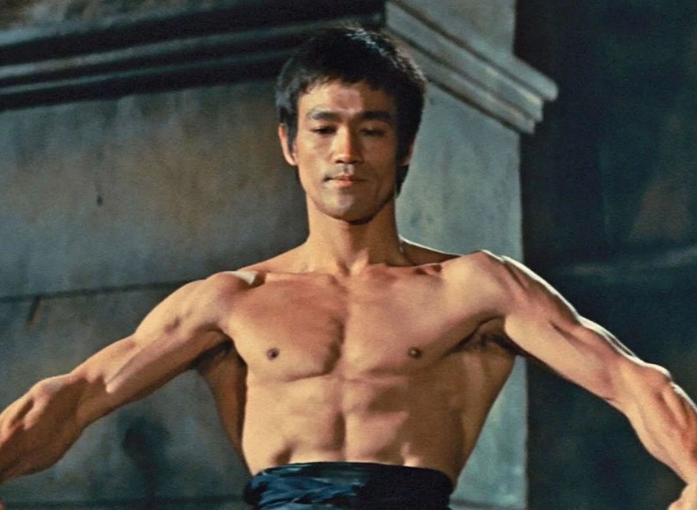
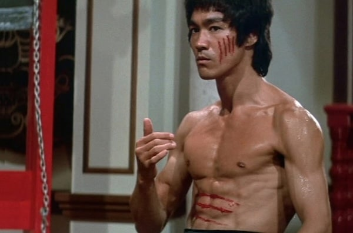
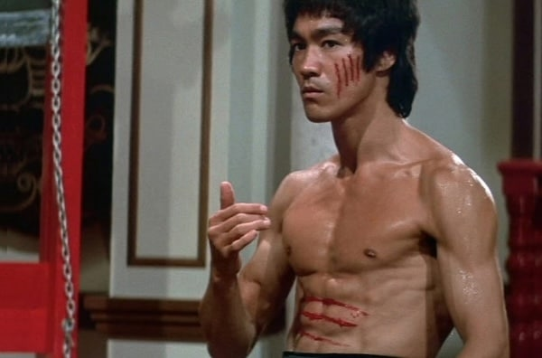

There is no doubt that Bruce Lee was a modern day pioneer of martial arts, on a global scale.
Bruce's martial journey, of almost 20 years, begins at age 13, with him learning the Chinese art of Wing Chun Gung-Fu and ends with the development of his own art of Jeet Kune Do.
Bruce began his martial arts training with Wing Chun master, Yip Man, in Hong Kong, at 13.
Bruce trained with Yip and Yip's top students until he left for the USA in 1959. Wing Chun Gung Fu is a concept-based Chinese martial art and form of self-defense utilising both
striking and grappling while specializing in close range combat. During his time in Seattle, Bruce mainly practiced Wing Chun Gung Fu and continued with many of these training
methods such as wooden dummy's and sandbags. However, his interest in other Chinese martial arts, as well as Boxing and Judo, grew steadily in Seattle, and he began experimenting
with many training routines from these systems. He was known to be extremely fast with his hands; almost invincible.
What Bruce Lee’s style of fight was so incredible about was his speed and his strength.
So, how did he train to get this speed and physique?
Well, in his early years of martial arts, he was mostly training just with martial arts, later he started weight-lifting. But the problem was that he got bulkier (heavy and muscular).
And this slowed him down. Because of this, he started hitting the books and seeking the best way to obtain strength without adding weight. This is when he found out about isometric training, which isn’t about how many reps you can do, but how many seconds you can resist. And this helped him a lot, because he and Muhammad Ali had the same strength. But the difference between them was the height and weight. Muhammad Ali weighed 107 kg, while Bruce, around 60 kg. Ali’s height was 191 cm, but Lee’s around 170 cm.
Bruce also put a lot of emphasis on the core, he also created the exercise called the dragon flag. He used to say that he was doing martial arts everyday.


 
